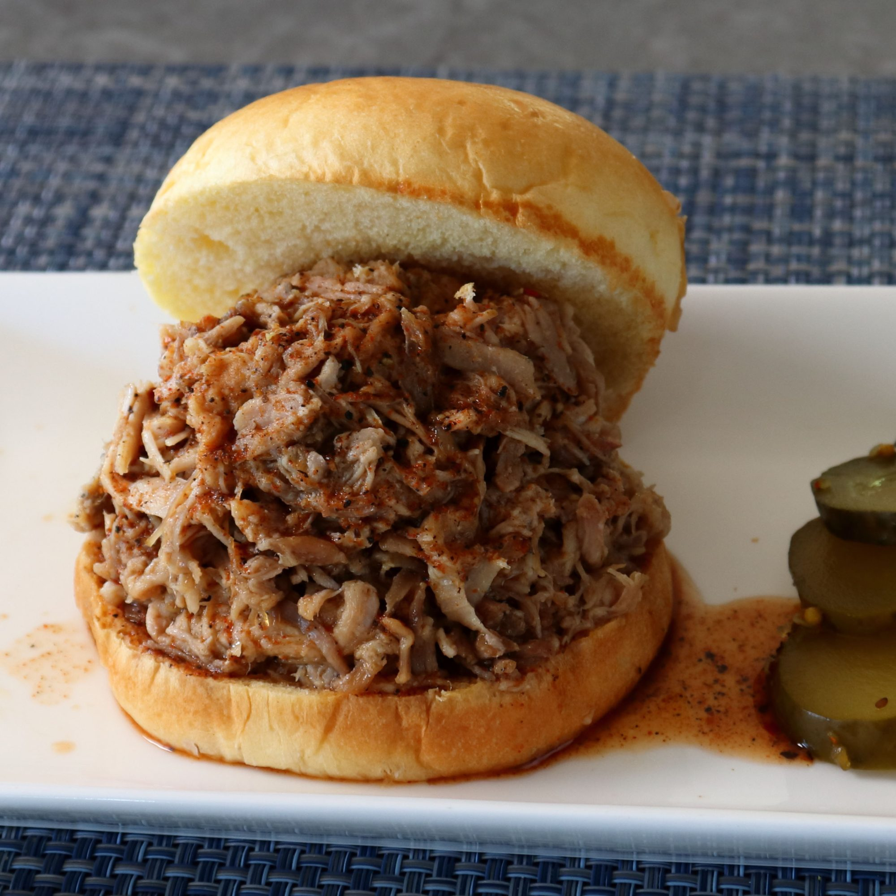

Carolina-Style Burger

Description
I'm showing you how to do a "whole hog" barbecue without a 6-foot-long barbecue pit, which you probably don't have, and without a whole hog, which you definitely don't have. While you probably could get those things if you really needed to, by using this experimental, mini version, you really don't have to. Serve on buns.
Ingredients
- 2½ pounds baby back pork ribs
- 1¾ pounds pork shoulder roast
- 1¼ pounds pork tenderloin, trimmed
- 1 pound pork belly, skin removed
- ¾ pound pork sirloin roast
For the rub
- 5 teaspoons kosher salt
- 2 tablespoons brown sugar
- 2 teaspoons smoked salt
- 2 teaspoons smoked paprika
- 2 teaspoons ground black pepper
- 1 teaspoon ground cumin
- 1 teaspoon garlic powder
- 1 teaspoon onion powder
- ½ teaspoon cayenne pepper